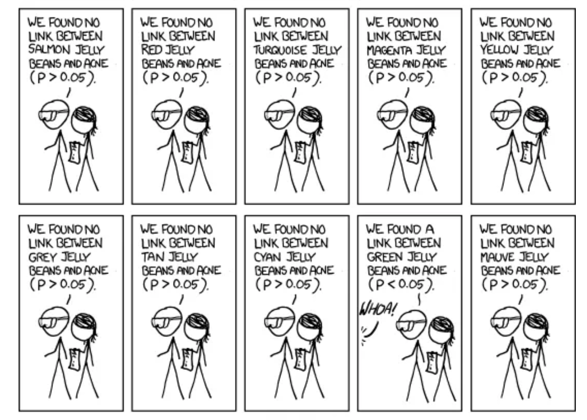
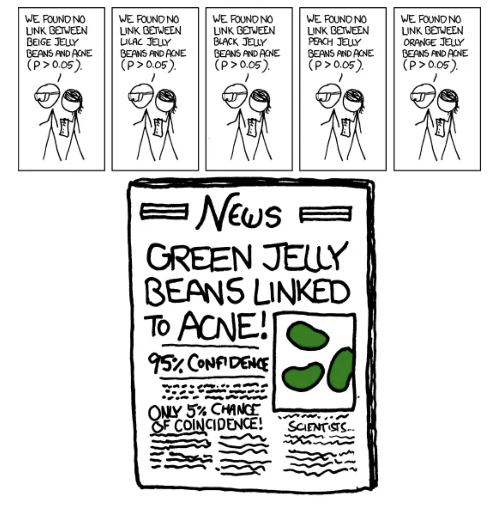

So, uh, we did the green study again and got no link. It was probably a– “RESEARCH CONFLICTED ON GREEN JELLY BEAN/ACNE LINK; MORE STUDY RECOMMENDED!”. From: https://xkcd.com/882/
Recap (2/3)

Recap (3/3)

The multiple testing problem
When conducting multiple hypothesis tests simultaneously, we increase the probability of false positives (Type I errors).
Suppose we perform \(n\) independent hypothesis tests, each with a significance level \(\alpha\).
The probability of making at least one Type I error (false positive) is:
\[P(\text{at least one false positive})=1−(1−\alpha)^n\]
This probability is known as Family-wise error rate (FWER).
There are two groups of approaches to deal with this:
controlling the family-wise error rate (FWER)
controlling the false discovery rate (FDR)
Both quantify the risks of multiple testing but in different ways.
Both have strengths and weaknesses but first I want to show you how they are different.
FWER
FWER is a metric that quantifies the risk caused by multiple testing. It’s the probabilityof making one or more false discoveries (type I errors) when performing multiple hypotheses tests.
Each large circle: a set of tests corrected for family-wise error. Small squares are null effects, small circles are real effects. Filled circles and squares represent rejections of the null hypothesis (“positives”). Two studies (filled large circles) produced one or more Type I errors (filled blue squares). This results in a FWER of \(2/9 = .22\).
Controlling FWER: ensures that no more than \(100\times \alpha\%\) of your studies will produce any (\(\geq1\)) Type I errors. One way ( the most common) to do that is through the Bonferroni correction, which we saw last time.
These are the same ‘data’ depicted in the first figure, but highlighting the information relevant to FDR. We have a total of 24 null rejections/significant effects (filled squares and circles), of which 3 are Type I errors (filled blue squares). So \(FDR=3/24=0.125\)
Controlling FDR: ensures, that across your statistical tests, at most \(\alpha\%\) of your significant results are really Type I errors. One way to correct for FDR (and the most common) is the Benjamini–Hochberg procedure (BH).
Takeaway 1: FDR will generally produce more Type I errors, but buys you more power (produces fewer Type II errors). Choosing between the two approaches always involves a trade-off between avoiding type I errors at the cost of reduced power.
You perform many hypothesis tests (e.g., genomics).
You want to balance false positives and false negatives.
Bonferroni is too strict, leading to low power.
Do NOT use FDR correction if:
Strict control of any false positives is required (e.g., drug approval studies).
There are only a few tests, where Bonferroni is appropriate.
PHILOSOPHICAL DIGRESSION ABOUT HISTORY, P-VALUES, EUGENICS AND MORE
P-values are not very reproducible
A reasonable definition of the P value is that it measures the strength of evidence against the null hypothesis. However, unless statistical power is very high (>90%), the P value does not do this reliably.
The difference between the mean values is 0.5, which is the true (population) effect size. The standard deviation (the spread of values) of each population is 1. From: Halsey et al. (2015)
We drew samples of ten values at random from each of the populations A and B from Figure 1 to give four simulated comparisons. Horizontal lines denote the mean. We give the estimated effect size (the difference in the means) and the P value when the sample pairs are compared.
Mistake: believing that statistical hypothesis is an essential part of statistical analyses
Approach
Questions Answered
Confidence Interval
What range of true effect is consistent with the data?
P-value
What is strength of the evidence that the true effect is not zero?
Hypothesis Test
Is there enough evidence to make a decision based on a conclusion that the effect is not zero?
Mistake: believing that statistical hypothesis is an essential part of statistical analyses
In many scientific situations, it is not necessary - and even counterproductive - to reach an all or nothing conclusion that a result is either statistically significant or not
With P-values and CIs you can assess the scientific evidence without ever using the phrase “statistically significant”
Stargazing: the process of over-emphasizing statistical significance.
“Significosis”: a dreadful condition that leads afflicted individuals to fail to identify that just because something is unlikely to have occurred by chance doesn’t mean it’s important/relevant
When reading the scientific literature, focus instead on the size of the association (difference, correlation etc) and its CI
Why P-values are confusing
P-values are often misunderstood because they answer a question that you never thought to ask.
In many situations, you know before collecting any data that the null hypothesis is almost certainly false.The difference or correlation or association in the overall population might be trivial, but it almost certainly isn’t zero.
The null hypothesis is usually that in the populations being studied there is zero difference between the means, zero correlation, etc.
People rarely conduct experiments or studies in which it is even conceivable that the null hypothesis is true.
Clinicians and scientists find it strange to calculate the probability of obtaining results that weren’t actually obtained. The math of theoretical probability distributions is beyond the easy comprehension of most scientists.
“If all else fails use significance at the𝛼 = 0.05 level and hope no one notices”. https://xkcd.com/1478/
Yes
The P-value was created with the goal of encouraging a closer look
R. Fisher: UK statistician/eugenicist/geneticist who created many of the tools we use in statistics. Invented the P-value 100 years ago
R. Fisher’s goal: give one a sense of how likely (or unlikely) a given set of “results” would be to be generated by pure chance. It’s a reality check in a sense.
He did NOT propose them as definitive criteria.
Why \(\alpha=0.05\)?
The value for which P=0.05, or 1 in 20 … is convenient to take this point as a limit in judging whether a deviation ought to be considered significant or not…”
“If one in twenty does not seem high enough odds, we may … draw the line at one in fifty …, or one in a hundred…. Personally, the writer prefers to set a low standard of significance at the 5 per cent point, and ignore entirely all results which fail to reach this level.” — R.A Fisher (statistician/eugenicist/geneticist)
Why \(\alpha=0.05\)?
While Fisher’s competitors proposed other things like CIs
…people with less statistical knowledge started using this as the ultimate criterium
So what relevance does \(P<\alpha\) actually have?
Two philosophical views of P-value
1) Absolutists > “Every time you say ‘trending towards significance’, a statistician > somewhere trips and falls down.” – someone on twitter
Consider statistics with nuance (e.g. “nearly statistically significant”) a sin
Reject things like declaring a P-value much smaller than 0.05 “highly significant”
Strengths:
Strengths: Forces decision about the strength of evidence that one’s looking for before you see the results of your analysis
Prevents change of criteria after the test
Weaknesses
Is \(P=0.052\) different from \(P=0.048\)?
Why is \(0.05\) enough to reject the null but no \(0.051\)?
Risk of P hacking: temptation to push the p-value to be low enough to be declared significant
Two philosophical views of P-value
2) Continualists
Consider the job of the P-value is to express the strength of evidence against the null hypothesis
Reasoning: P-values as continuous variables that are prone to sampling error. If strength of evidence is continuous (rather than binary), our inferential conclusions should be too
Report p-values (usually with CIs of sample statistic) and let reader interpret based on their level of skepticism.
Strengths - Sees P-value as subject to sampling error (which it is!) - Recognizes and distinguishes between results that provide weak evidence, moderate evidence, and strong evidence against the null.
Weaknesses - Harder to remain objective and skeptical when one can keep looking for “trends”
END OF DIGRESSION
Hypothesis Testing: Key Points
We test hypotheses about populations from sample estimates.
A P-Value is the probability that a boring population would generate a sample estimate as or more extreme than we observe.
We reject the null hypothesis when this probability is low & fail to reject it otherwise.
Hypothesis testing can go wrong: We can reject true nulls and fail to reject false ones.